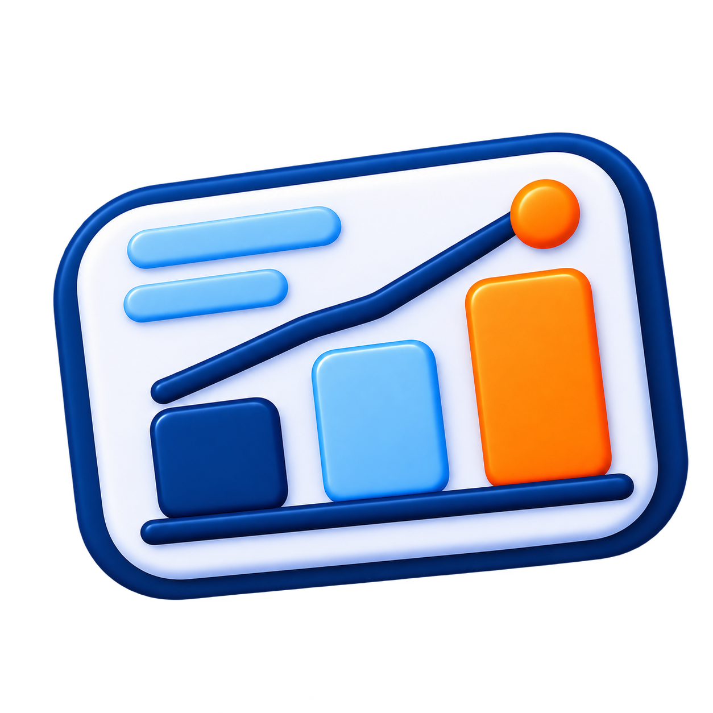
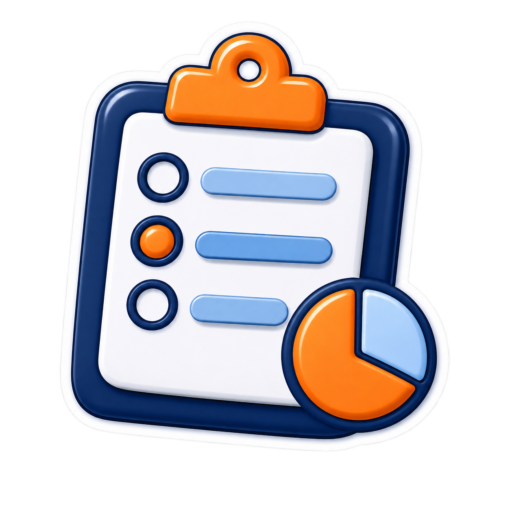

Creación de cursos Creación de cursos | Permite crear, organizar y administrar cursos virtuales. |
 Gestión de documentos Gestión de documentos | Facilita subir, almacenar y compartir archivos educativos. |
| Evaluaciones | Permite elaborar cuestionarios, pruebas y actividades evaluativas. |
| Rutas de aprendizaje | Organiza los contenidos y actividades siguiendo una secuencia de aprendizaje. |
| Foros | Facilita la comunicación y el intercambio de opiniones entre participantes. |
 Chat Chat | Permite mantener conversaciones entre docentes y estudiantes. |
| Tareas | Posibilita asignar actividades y recibir trabajos de los estudiantes. |
 Seguimiento académico | Permite consultar el progreso y los resultados de los participantes. |
 Grupos de trabajo Grupos de trabajo | Facilita la organización de estudiantes para realizar actividades colaborativas. |
| Calendario | Permite organizar eventos, actividades y fechas importantes. |
 Encuestas | Facilita recopilar opiniones y respuestas de los participantes. |
 Compatibilidad SCORM Compatibilidad SCORM | Permite incorporar contenidos interactivos creados en formato SCORM. |
 Certificados y videoconferencia Certificados y videoconferencia | Facilita emitir certificados y realizar clases en línea por videoconferencia. |